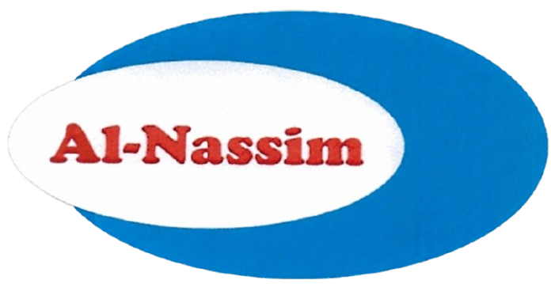

Houseware
Equipment
Cleaning Tools
Home & Outdoor
Kitchenware
Supermarket
Equipment
Cooling Appliances
Trolleys & Baskets
Shelves & Stands
Counters and Scales
Accessories
Warehouse
Equipment
Trolleys & Baskets
Forklifts & Pallets
Heavy Duty Racks
Packaging
Manufacturer
Cold
Rooms
search
search
EN
|
عربي
ENG
download
DOWNLOAD OUR APP
dark_mode
shopping_cart
00
menu
download
Download App
language
Language
عربي
dark_mode
Dark / Light Mode
menu